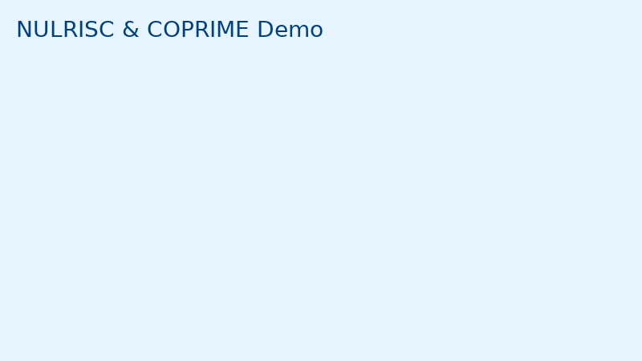

ICMR‑NIN · NULRISC & COPRIME
Home
Nutrition Hub
Toolkits
Research
Events
FAQs
Contact
English
हिन्दी
IEC Portal Demo — Home
GitHub‑ready bilingual demo. Upload to your repo and enable Pages.
Quick links
Nutrition & Lifestyle Hub
Toolkits
Research & Evidence
Events & Campaigns
FAQs
Contact
Featured Image

Featured PDF
Podcast